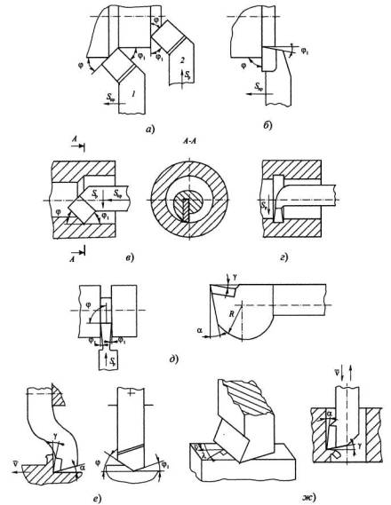

В производстве кроме проходных токарных резцов широкое распространение получили подрезные, расточные и отрезные резцы.
Подрезные резцы (а, б) изготавливают с отогнутой и прямой державками. Хотя отогнутая державка усложняет изготовление резцов, она обеспечивает следующие преимущества: универсальность, так как проходные резцы могут работать напроход и на подрезание; возможность вести обработку в менее доступных местах.
Расточные резцы (в, г) используют для обработки внутренних сквозных и глухих отверстий, а также внутренних канавок. Из-за большого вылета державки, уменьшенной площади ее сечения и затрудненного отвода стружки расточные резцы работают в более тяжелых условиях, чем проходные резцы. Державки расточных резцов выполняют круглыми, а в месте крепления они имеют утолщение квадратного сечения. Диаметр державки зависит от диаметра обрабатываемого отверстия и равен dд = (0,5...0,8) dо, где do – диаметр обрабатываемого отверстия.
Расточные резцы имеют малую виброустойчивость и жесткость. Чтобы исключить врезание задней поверхности резца в поверхность резания, лезвие резца располагают несколько ниже оси отверстия, а заднюю поверхность выполняют криволинейной формы.
Отрезные резцы (д) применяют для отрезки заготовок из прутка и проточки наружных канавок в заготовках на токарных, токарно-револьверных станках, станках-автоматах и пр.
Из-за тяжелых условий работы (большого вылета резца, затрудненных условий деформации металла при переходе в стружку, малой жесткости режущей части и, следовательно, низкой виброустойчивости) отрезные резцы чаще всего изготавливают из быстрорежущей стали. Режущая часть имеет главную режущую кромку с углом φ = 90° и две вспомогательные кромки с углами φ1 = 1°30’...З°. Если нужно обработать торец заготовки без оставления стержня (бобышки) в ее центре, то главную режущую кромку затачивают под углом φ = 75...80°.
При использовании напайных твердосплавных режущих пластин длина главной режущей кромки отрезного резца должна быть не менее 5 мм. Для повышения жесткости в вертикальной плоскости головка резца обычно делается утолщенной, а режущая кромка во избежание отрыва твердосплавной пластины устанавливается ниже оси центров станка на расстоянии 0,5...1,0 мм.
Передний угол γ оказывает большое влияние на виброустойчивость отрезных резцов, которая снижается с его уменьшением. Поэтому рекомендуется затачивать угол γ = 15...20° с упрочняющей фаской шириной f = 0,2...0,3 мм и под углом γф = 0...–5°, задний угол α = 10...12°.
Строгальные и долбежные резцы (е, ж) – это инструменты, работающие с ударной нагрузкой в момент периодически повторяющегося врезания. Из-за консольного крепления таких резцов со сравнительно большим вылетом их державки подвергаются упругим деформациям и вибрациям. Эти резцы работают со сниженными скоростями резания из-за больших инерционных масс и сечениями среза, в 1,5-2 раза большими, чем при токарной обработке. По этим причинам условия резания неблагоприятны для использования твердосплавных пластин, поэтому чаще всего эти резцы изготавливают из быстрорежущих сталей.
Во избежание внедрения задней поверхности строгального резца в обработанную поверхность заготовки из-за упругих деформаций державки его вершина должна быть расположена на одном уровне с опорной поверхностью, и поэтому державка имеет изогнутую форму.
На рисунке на позиции (е) показаны геометрические параметры строгальных резцов при несвободном и свободном резании (без вспомогательных кромок), а на позиции (ж) показаны углы γ и α долбежных резцов. На примере свободного строгания можно дать другое определение угла наклона главной режущей кромки λ – это угол между вектором скорости резания и нормалью к проекции главной режущей кромки на плоскость резания, которая в данном примере совпадает с обработанной поверхностью. Такое определение λ применимо также к другим видам инструментов, например к сверлам и фрезам.
Величины геометрических параметров строгальных и долбежных резцов обычно принимают близкими к принятым для токарных резцов, за некоторыми исключениями. Так, для предохранения выкрашивания вершины резцов при работе с ударами угол λ увеличивают до 10...12°. При несвободном строгании рекомендуется главный угол в плане φ = 20...45°. Для чистовых операций (под шабрение) желательно снижать угол φ1 до 0.
Твердосплавные резцы – это резцы, оснащенные пластинами твердого сплава, обеспечивающие высокую производительность и получившие наибольшее распространение на практике. Пластины крепятся к державке пайкой или механическим путем. Цельные твердосплавные резцы изготавливают только малых размеров (они применяются в приборостроении и часовой промышленности).